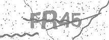

一 介绍 一些网站会在正常的账号密码认证之外加一些验证码，以此来明确地区分人/机行为，从一定程度上达到反爬的效果，对于简单的校验码Tesserocr就可以搞定，如下

但一些网站加入了滑动验证码，最典型的要属于极验滑动认证了，极验官网：http://www.geetest.com/，下图是极验的登录界面
现在极验验证码已经更新到了 3.0 版本，截至 2017 年 7 月全球已有十六万家企业正在使用极验，每天服务响应超过四亿次，广泛应用于直播视频、金融服务、电子商务、游戏娱乐、政府企业等各大类型网站
对于这类验证，如果我们直接模拟表单请求，繁琐的认证参数与认证流程会让你蛋碎一地，我们可以用selenium驱动浏览器来解决这个问题，大致分为以下几个步骤
1 2 3 4 5 6 7 8 9 10 11 12 13 14 15 #步骤一:点击按钮，弹出没有缺口的图片 #步骤二：获取步骤一的图片 #步骤三：点击滑动按钮，弹出带缺口的图片 #步骤四：获取带缺口的图片 #步骤五：对比两张图片的所有RBG像素点，得到不一样像素点的x值，即要移动的距离 #步骤六：模拟人的行为习惯（先匀加速拖动后匀减速拖动），把需要拖动的总距离分成一段一段小的轨迹 #步骤七：按照轨迹拖动，完全验证 #步骤八：完成登录
二 实现 1 2 3 4 5 6 7 8 9 10 11 12 Pillow:基于PIL，处理python 3. x的图形图像库.因为PIL只能处理到python 2. x，而这个模块能处理Python3.x，目前用它做图形的很多. http://www.cnblogs.com/apexchu/p/4231041. html C:\Users\Administrator>pip3 install pillow C:\Users\Administrator>python3 Python 3.6 .1 (v3.6 .1 :69c0db5, Mar 21 2017 , 18 :41 :36 ) [MSC v.1900 64 bit (AMD64)] on win32 Type "help" , "copyright" , "credits" or "license" for more information.>>> from PIL import Image>>>
1 2 3 4 5 6 7 8 9 10 11 12 13 14 15 16 17 18 19 20 21 22 23 24 25 26 27 28 29 30 31 32 33 34 35 36 37 38 39 40 41 42 43 44 45 46 47 48 49 50 51 52 53 54 55 56 57 58 59 60 61 62 63 64 65 66 67 68 69 70 71 72 73 74 75 76 77 78 79 80 81 82 83 84 85 86 87 88 89 90 91 92 93 94 95 96 97 98 99 100 101 102 103 104 105 106 107 108 109 110 111 112 113 114 115 116 117 118 119 120 121 122 123 124 125 126 127 128 129 130 131 132 133 134 135 136 137 138 139 140 141 142 143 144 145 146 147 148 149 150 151 152 153 154 155 156 157 158 159 160 161 from selenium import webdriverfrom selenium.webdriver import ActionChainsfrom selenium.webdriver.common.by import Byfrom selenium.webdriver.common.keys import Keysfrom selenium.webdriver.support import expected_conditions as ECfrom selenium.webdriver.support.wait import WebDriverWaitfrom PIL import Imageimport timedef get_snap (): ''' 对整个网页截图，保存成图片，然后用PIL.Image拿到图片对象 :return: 图片对象 ''' driver.save_screenshot('snap.png' ) page_snap_obj=Image.open ('snap.png' ) return page_snap_obj def get_image (): ''' 从网页的网站截图中，截取验证码图片 :return: 验证码图片 ''' img=wait.until(EC.presence_of_element_located((By.CLASS_NAME,'geetest_canvas_img' ))) time.sleep(2 ) localtion=img.location size=img.size top=localtion['y' ] bottom=localtion['y' ]+size['height' ] left=localtion['x' ] right=localtion['x' ]+size['width' ] page_snap_obj=get_snap() crop_imag_obj=page_snap_obj.crop((left,top,right,bottom)) return crop_imag_obj def get_distance (image1,image2 ): ''' 拿到滑动验证码需要移动的距离 :param image1:没有缺口的图片对象 :param image2:带缺口的图片对象 :return:需要移动的距离 ''' threshold=60 left=57 for i in range (left,image1.size[0 ]): for j in range (image1.size[1 ]): rgb1=image1.load()[i,j] rgb2=image2.load()[i,j] res1=abs (rgb1[0 ]-rgb2[0 ]) res2=abs (rgb1[1 ]-rgb2[1 ]) res3=abs (rgb1[2 ]-rgb2[2 ]) if not (res1 < threshold and res2 < threshold and res3 < threshold): return i-7 return i-7 def get_tracks (distance ): ''' 拿到移动轨迹，模仿人的滑动行为，先匀加速后匀减速 匀变速运动基本公式： ①v=v0+at ②s=v0t+½at² ③v²-v0²=2as :param distance: 需要移动的距离 :return: 存放每0.3秒移动的距离 ''' v=0 t=0.3 tracks=[] current=0 mid=distance*4 /5 while current < distance: if current < mid: a= 2 else : a=-3 v0=v s=v0*t+0.5 *a*(t**2 ) current+=s tracks.append(round (s)) v=v0+a*t return tracks try : driver=webdriver.Chrome() driver.get('https://account.geetest.com/login' ) wait=WebDriverWait(driver,10 ) button=wait.until(EC.presence_of_element_located((By.CLASS_NAME,'geetest_radar_tip' ))) button.click() image1=get_image() button=wait.until(EC.presence_of_element_located((By.CLASS_NAME,'geetest_slider_button' ))) button.click() image2=get_image() distance=get_distance(image1,image2) tracks=get_tracks(distance) print (tracks) print (image1.size) print (distance,sum (tracks)) button=wait.until(EC.presence_of_element_located((By.CLASS_NAME,'geetest_slider_button' ))) ActionChains(driver).click_and_hold(button).perform() for track in tracks: ActionChains(driver).move_by_offset(xoffset=track,yoffset=0 ).perform() else : ActionChains(driver).move_by_offset(xoffset=3 ,yoffset=0 ).perform() ActionChains(driver).move_by_offset(xoffset=-3 ,yoffset=0 ).perform() time.sleep(0.5 ) ActionChains(driver).release().perform() input_email=driver.find_element_by_id('email' ) input_password=driver.find_element_by_id('password' ) button=wait.until(EC.element_to_be_clickable((By.CLASS_NAME,'login-btn' ))) input_email.send_keys('18611453110@163.com' ) input_password.send_keys('linhaifeng123' ) button.click() import time time.sleep(200 ) finally : driver.close()
破解博客园后台登录
1 2 3 4 5 6 7 8 9 10 11 12 13 14 15 16 17 18 19 20 21 22 23 24 25 26 27 28 29 30 31 32 33 34 35 36 37 38 39 40 41 42 43 44 45 46 47 48 49 50 51 52 53 54 55 56 57 58 59 60 61 62 63 64 65 66 67 68 69 70 71 72 73 74 75 76 77 78 79 80 81 82 83 84 85 86 87 88 89 90 91 92 93 94 95 96 97 98 99 100 101 102 103 104 105 106 107 108 109 110 111 112 113 114 115 116 117 118 119 120 121 122 123 124 125 126 127 128 129 from selenium import webdriverfrom selenium.webdriver import ActionChainsfrom selenium.webdriver.common.by import Byfrom selenium.webdriver.common.keys import Keysfrom selenium.webdriver.support import expected_conditions as ECfrom selenium.webdriver.support.wait import WebDriverWaitfrom PIL import Imageimport timedef get_snap (): driver.save_screenshot('full_snap.png' ) page_snap_obj=Image.open ('full_snap.png' ) return page_snap_obj def get_image (): img=driver.find_element_by_class_name('geetest_canvas_img' ) time.sleep(2 ) location=img.location size=img.size left=location['x' ] top=location['y' ] right=left+size['width' ] bottom=top+size['height' ] page_snap_obj=get_snap() image_obj=page_snap_obj.crop((left,top,right,bottom)) return image_obj def get_distance (image1,image2 ): start=57 threhold=60 for i in range (start,image1.size[0 ]): for j in range (image1.size[1 ]): rgb1=image1.load()[i,j] rgb2=image2.load()[i,j] res1=abs (rgb1[0 ]-rgb2[0 ]) res2=abs (rgb1[1 ]-rgb2[1 ]) res3=abs (rgb1[2 ]-rgb2[2 ]) if not (res1 < threhold and res2 < threhold and res3 < threhold): return i-7 return i-7 def get_tracks (distance ): distance+=20 v=0 t=0.2 forward_tracks=[] current=0 mid=distance*3 /5 while current < distance: if current < mid: a=2 else : a=-3 s=v*t+0.5 *a*(t**2 ) v=v+a*t current+=s forward_tracks.append(round (s)) back_tracks=[-3 ,-3 ,-2 ,-2 ,-2 ,-2 ,-2 ,-1 ,-1 ,-1 ] return {'forward_tracks' :forward_tracks,'back_tracks' :back_tracks} try : driver = webdriver.Chrome() driver.implicitly_wait(3 ) driver.get('https://passport.cnblogs.com/user/signin' ) username = driver.find_element_by_id('input1' ) pwd = driver.find_element_by_id('input2' ) signin = driver.find_element_by_id('signin' ) username.send_keys('linhaifeng' ) pwd.send_keys('xxxxx' ) signin.click() button = driver.find_element_by_class_name('geetest_radar_tip' ) button.click() image1 = get_image() button = driver.find_element_by_class_name('geetest_slider_button' ) button.click() image2 = get_image() distance = get_distance(image1, image2) tracks = get_tracks(distance) print (tracks) button = driver.find_element_by_class_name('geetest_slider_button' ) ActionChains(driver).click_and_hold(button).perform() for track in tracks['forward_tracks' ]: ActionChains(driver).move_by_offset(xoffset=track, yoffset=0 ).perform() time.sleep(0.5 ) for back_track in tracks['back_tracks' ]: ActionChains(driver).move_by_offset(xoffset=back_track, yoffset=0 ).perform() ActionChains(driver).move_by_offset(xoffset=-3 , yoffset=0 ).perform() ActionChains(driver).move_by_offset(xoffset=3 , yoffset=0 ).perform() time.sleep(0.5 ) ActionChains(driver).release().perform() time.sleep(10 ) finally : driver.close()
修订版
1 2 3 4 5 6 7 8 9 10 11 12 13 14 15 16 17 18 19 20 21 22 23 24 25 26 27 28 29 30 31 32 33 34 35 36 37 38 39 40 41 42 43 44 45 46 47 48 49 50 51 52 53 54 55 56 57 58 59 60 61 62 63 64 65 66 67 68 69 70 71 72 73 74 75 76 77 78 79 80 81 82 83 84 85 86 87 88 89 90 91 92 93 94 95 96 97 98 99 100 101 102 103 104 105 106 107 108 109 110 111 112 113 114 115 116 117 118 119 120 121 122 123 124 125 126 127 128 129 130 131 132 133 134 135 136 137 from selenium import webdriverfrom selenium.webdriver import ActionChainsfrom selenium.webdriver.common.by import Byfrom selenium.webdriver.common.keys import Keysfrom selenium.webdriver.support import expected_conditions as ECfrom selenium.webdriver.support.wait import WebDriverWaitfrom PIL import Imageimport timedef get_snap (driver ): driver.save_screenshot('full_snap.png' ) page_snap_obj=Image.open ('full_snap.png' ) return page_snap_obj def get_image (driver ): img=driver.find_element_by_class_name('geetest_canvas_img' ) time.sleep(2 ) location=img.location size=img.size left=location['x' ] top=location['y' ] right=left+size['width' ] bottom=top+size['height' ] page_snap_obj=get_snap(driver) image_obj=page_snap_obj.crop((left,top,right,bottom)) return image_obj def get_distance (image1,image2 ): start=57 threhold=60 for i in range (start,image1.size[0 ]): for j in range (image1.size[1 ]): rgb1=image1.load()[i,j] rgb2=image2.load()[i,j] res1=abs (rgb1[0 ]-rgb2[0 ]) res2=abs (rgb1[1 ]-rgb2[1 ]) res3=abs (rgb1[2 ]-rgb2[2 ]) if not (res1 < threhold and res2 < threhold and res3 < threhold): return i-7 return i-7 def get_tracks (distance ): distance+=20 v=0 t=0.2 forward_tracks=[] current=0 mid=distance*3 /5 while current < distance: if current < mid: a=2 else : a=-3 s=v*t+0.5 *a*(t**2 ) v=v+a*t current+=s forward_tracks.append(round (s)) back_tracks=[-3 ,-3 ,-2 ,-2 ,-2 ,-2 ,-2 ,-1 ,-1 ,-1 ] return {'forward_tracks' :forward_tracks,'back_tracks' :back_tracks} def crack (driver ): button = driver.find_element_by_class_name('geetest_radar_tip' ) button.click() image1 = get_image(driver) button = driver.find_element_by_class_name('geetest_slider_button' ) button.click() image2 = get_image(driver) distance = get_distance(image1, image2) tracks = get_tracks(distance) print (tracks) button = driver.find_element_by_class_name('geetest_slider_button' ) ActionChains(driver).click_and_hold(button).perform() for track in tracks['forward_tracks' ]: ActionChains(driver).move_by_offset(xoffset=track, yoffset=0 ).perform() time.sleep(0.5 ) for back_track in tracks['back_tracks' ]: ActionChains(driver).move_by_offset(xoffset=back_track, yoffset=0 ).perform() ActionChains(driver).move_by_offset(xoffset=-3 , yoffset=0 ).perform() ActionChains(driver).move_by_offset(xoffset=3 , yoffset=0 ).perform() time.sleep(0.5 ) ActionChains(driver).release().perform() def login_cnblogs (username,password ): driver = webdriver.Chrome() try : driver.implicitly_wait(3 ) driver.get('https://passport.cnblogs.com/user/signin' ) input_username = driver.find_element_by_id('input1' ) input_pwd = driver.find_element_by_id('input2' ) signin = driver.find_element_by_id('signin' ) input_username.send_keys(username) input_pwd.send_keys(password) signin.click() crack(driver) time.sleep(10 ) finally : driver.close() if __name__ == '__main__' : login_cnblogs(username='linhaifeng' ,password='xxxx' )
 微信
微信 支付宝
支付宝